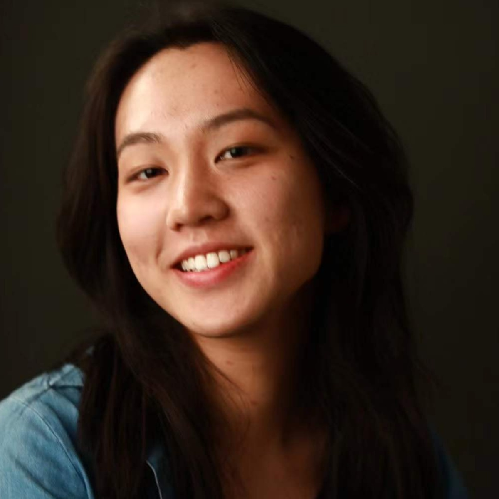

Zhejiang University
M.A. in Linguistics
Supervisor: Prof. Jing YANG
Concentrations: neurolinguistics and psycholinguistics
September 2025 — Present
Linguistics · Cognition · Neuroscience
I’m an MA student in linguistics at Zhejiang University, supervised by Prof. Jing YANG. My work sits at the intersection of linguistics, psychology, and neuroscience, with a current focus on how two brains coordinate during real-time communication.

01 / Recent interests
brain-to-brain coupling
in conversation
What happens when two people’s brains meet in conversation?
I’m interested in using EEG hyperscanning to study neural synchrony during natural interaction—especially how interlocutors align, predict, and coordinate turn-taking in real time.
01 How does neural coupling emerge across two brains?
02 What does synchrony reveal about mutual understanding?
03 How do prediction and turn-taking shape interaction?
02 / Education
M.A. in Linguistics
Supervisor: Prof. Jing YANG
Concentrations: neurolinguistics and psycholinguistics
B.A. in English (Linguistics)
GPA: 3.94 / 4.00
03 / Research
Research role
Research Assistant · Supervisor: Dr. Cheng LUO
Presentation
Oral Presentation · The 19th International Conference on the Processing of East Asian Languages (ICPEAL 2025)
Authors: Yu QI and Prof. Jing YANG
Patent
Invention Patent · Granted · Zhejiang Lab
Inventors: Cheng LUO, Ning MA, Xiao WANG, Yu QI, Yunlong XUE
Patent No.: ZL 2024 1 1247254.3 · Grant Publication No.: CN 119226500 B
Role: Fourth Inventor
04 / Recognition
Zhejiang University Third Prize Scholarship
National Student Research Training Program — highest level of SRTP funding and outstanding project completion
Zhejiang University Global Engagement Program, Honor Class of 2025
05 / A little more
Born on a strangely well-timed day.
October 26, 2004—exactly the same day Grand Theft Auto: San Andreas was first released, and fourteen years before Red Dead Redemption 2 arrived on October 26, 2018. Apparently, October 26 is a good day for open worlds. :)
I was born in Nanchang, Jiangxi Province. Beyond research, I’m interested in fine arts, films, music, travel, and philosophical writing.
Let’s talk. ↗